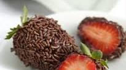

Receitas
Arroz de Couve-Flor
- Arroz
- Couve-Flor
- Cebeça Média
- Azeite
Deixe a couve-flor picada. Adicione os ingredientes e refogue bem. Adicione sal, tampe a panela e deixe cozinhar.
Bolo de Café
- Farinha
- Açúcar
- Café Coado
- Chocolate em Pó
- Ovos
Bata o açúcar, as gemas e o café. Adicione farinha e chocolate e mexa bem. Bata claras e junte a mistura.

Coxinha de Brigadeiro
- Leite condensado
- Chocolate em Pó
- Manteiga
- Morango
- Chocolate Granulado
Junte o leite condensado, chocolate em pó e manteiga. Aqueça no fogo baixo. Envolva os morangos e passe no granulado.